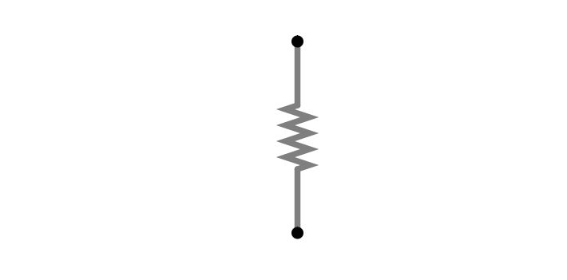
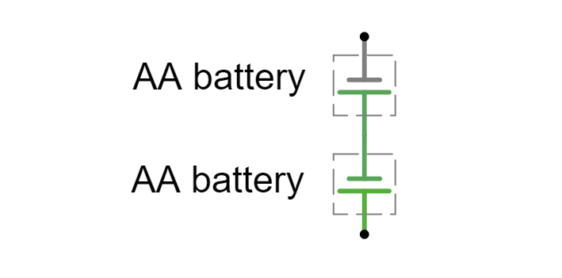
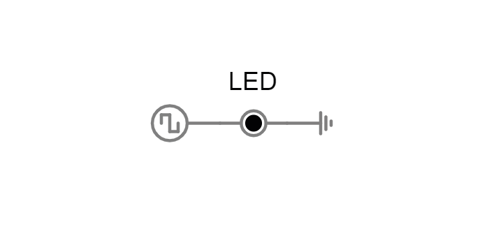
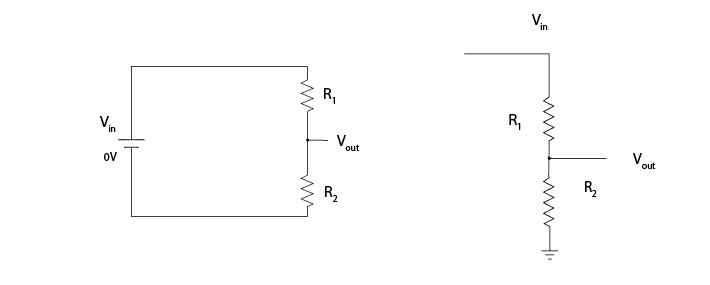
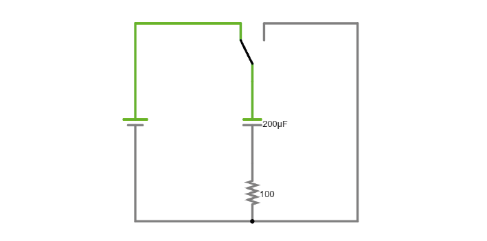
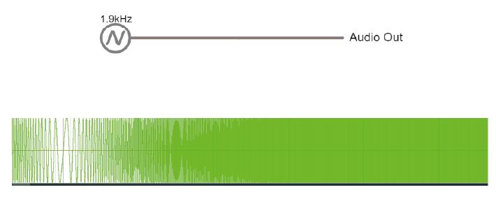

Exercises Day 1 TA#
Table of Contents
Day 1! For many students, day 1 is about getting to know the equipment & using the right names for everything. Unless students are already very confident, it’s best to take everyone through day 1 as a group. Particularly at this point, it’s better to over-explain and repeat than risk people getting lost.
For those without the kit, the exercises will have to focus on getting to know the simulator.
1. Using a multimeter#
We will be using a circuit simulator to model the different settings on a multimeter. A multimeter can be used to measure voltage, resistance, and current.
First we will measure resistance of a resistor.
Setup:
Add an Ohmmeter to the circuit (Draw/Outputs and Labels/Add Ohmmeter).
Connect it to the resistor and Run the simulator.
Right-click on the Ohmmeter, select ‘View in New Scope’.
Set the scope to display resistance values instead of voltage. Right-click on the scope and select ‘Properties’. Select ‘Show Resistance’ instead of ‘Show Voltage’.
1A. Read the value of the resistor in Ohms from the scope.
Now we will measure the voltage across two batteries.
Setup:
Add a Voltmeter to the circuit, connect it across the batteries, and run the simulator.
What voltage do you measure?
How can you get the Voltmeter to give a negative voltage measurement?
Setup: Students have to remove the orange cover of the multimeter to insert the batteries, and need a screwdriver.
Measuring voltages#
Microcontrollers like an Arduino or a Teensy can be used to generate output voltages with specific properties.
Take a look at this simulation. A voltage output signal is being generated on the left, which turns an LED on and off at a specific frequency. Our goal is to measure the properties of this voltage output.
2A. Connect a voltmeter across the LED. This is similar to using a multimeter in the lab. What is the amplitude of the signal in Volts? With what frequency does the signal change amplitude?
2B. Visualise the voltage across the LED in a new Scope. This is similar to using an oscilloscope in the lab. Is the voltage measured different now? With what frequency does the signal change amplitude, how would you describe the shape of this signal?
2C. What are the advantages of an oscilloscope over a multimeter?
2D. Change the voltage signal so that it outputs a 50Hz sinewave.
2A. 3V. It should be hard to measure the frequency this way (the answer is 2Hz but the point is to show that measuring frequency or shape is hard with a multimeter).
2B. Still 3V, 2Hz, square wave.
2C. Oscilloscopes have a faster time resolution and display the history of signals over time, so that we can extract information about frequency and shape.
2D.
3. Ohm’s Law#
Ohm’s law describes how potential (V), current (I) and resistance (R) are related:
When looking at a whole circuit, we can use this to calculate how much current will flow. Here is a simple circuit with a battery and two resistors. Current flows from the positive terminal of the battery to the negative terminal of the battery. The resistors are ‘in series’ as there is only 1 path for current flow.

3A. Click on the image to go to the simulator. Right-click on the top wire in the circuit, and then select Edit to display the current through that wire. Double-click on either of the resistors to decrease their value. What happens to the current in the circuit?
3A: The current should increase with decreased circuit resistance. The current change affects the entire circuit; current is the same everywhere.
4. Resistors#
Here’s another simulation demonstrating Ohm’s law. This time, the current moves from a 5 Volt voltage source (bright green) into ground (grey, earth), across one of two resistors. The resistors are ‘in parallel’ as current can flow cross over one or the other resistor.
Setup:
Click the image open the simulator.
Right click on a resistor and select ‘View in new scope’.
Do the same for the other resistor. You can click ‘Reset’ to restart the simulation and synchronise the scopes.
4A. What do you predict will happen to the voltage over the left resistor if you double its resistance? What will happen to the current?
4B. What will happen to the voltage and current over the right-hand resistor when the other doubles in resistance?
Now double the value of the left-hand resistor in the simulator and see if your predictions were correct.
Students can get confused about using Ohm’s law over a whole closed circuit (to get current) and over individual components (voltage drops). It helps to remind them at which points in the circuit current must be equal and where voltage must be highest and lowest. Check that they understand why the current across these two resistors can be different, but not in the closed circuit above. Decreasing the resistance of any of the two resistors increases the current since they are in series and V = I * (R1+R2). Changes the ratio of the resistors changes the voltage drop over each resistor.
4A: The voltage will not change; voltage over both resistors is the same as they are connected in parallel to a 5V source. The current will vary in proportion to resistance, so it will halve if the resistance doubles.
4B: Nothing will change for this branch of the circuit.
Circuit analysis refresher: - In series: same current flowing through components. - In parallel: same voltage across components.
Methods for solving a circuit: Equivalent https://www.khanacademy.org/science/in-in-class10th-physics/in-in-electricity/in-in-solving-a-circuit-with-series-and-parallel-resistors/v/solved-example-finding-current-voltage-in-a-circuit and more advanced methods https://www.khanacademy.org/science/electrical-engineering/ee-circuit-analysis-topic/ee-dc-circuit-analysis/a/ee-circuit-analysis-overview
5. Voltage Divider#
Voltage is always measured relative to a point that we consider 0V. For a battery, the negative terminal is 0V.
Voltage (potential energy) ‘drops’ over each resistor, as potential energy is converted to another form of energy such as heat or light. In a circuit powered by a 9V battery, all 9V of potential energy from our battery source must drop over circuit components, to return to 0V at the negative terminal of the battery.
In each circuit below, the current through R1 must equal the current through R2, as they are resistors in series. Following Ohm’s law, given the same current, a higher resistor will have a higher voltage drop (V=IR). The total voltage drop over the circuit must equal the provided voltage.
Therefore, in a circuit with multiple resistors in series, the ratio of their resistances determines how much voltage will drop over each. We can therefore split up (divide) the voltage from a source across resistors to produce an output voltage Vout:
5A. Using the simulator (here’s an empty full-screen https://tinyurl.com/y477e9qd) build a voltage divider circuit in which you use:
a 3V battery (‘Draw’ a 1-terminal voltage source set to 3V)
2 resistors
a readout wire (right click and ‘Edit’ to show the voltage Vout)
To provide an 2.1V output voltage Vout at the readout wire.
5B. Change the ratios of the resistors until the readout voltage is the size of an action potential measured in the extracellular fluid.
5A: Example answer:
Though it can be done with different resistors!
Sparkfun overview: https://learn.sparkfun.com/tutorials/voltage-dividers/all#extra-credit-proof
5B:
6. Capacitors#
There are two types of capacitor. Polarised capacitors must be used in a specific orientation. Usually, ceramic capacitors are not polarised and you can use them in either direction, whereas tube-shaped electrolytic capacitors are polarised. The negative pin is indicated by a ‘-’ marking, and the positive leg is often longer.
As discussed in the Theory handout, capacitors occur wherever charge can be separated along two conducting surfaces, separated by an insulating material that prevents the plates from touching. Cell membranes are capacitors, as are electrodes.
The amount of charge (Q) a capacitor can separate depends on is its capacitance (C, measured in farads) and the voltage (V) across the capacitor.

Setup:
The simulator shows a simplified ‘cell membrane’ represented as a capacitor and a resistor. Changing the intracellular voltage supply changes the voltage across the cell membrane. The extracellular fluid is always 0 V.
6A. The initial voltage over the capacitor should be -72mV. If not, set the Voltage slider to around -70mV. Click ‘Reset’ to see current move through the circuit until the capacitor is charged to 72mV. Which direction is the current flow? Why does current stop moving?
6B. Using the ‘Voltage’ slider, set the voltage supply to 0 mVolts, and then to 20mV. What happens to the current flow in the circuit?
6C. Can you mimic an action potential by changing the intracellular voltage?
6A. Direction: Current flows into the cell, towards the power supply, as it is more negative than 0. Current flows until the capacitor is fully charged. Because charges can’t actually move through the capacitor, but have to interact with each other over the insulating material, once the plates are fully charged no more current can flow.
6B. Current will start to leave the cell. When we increase the voltage difference over the capacitor, we are providing more charges on 1 side of the capacitor, which can then influence the charges on the other side. Equally, when we decrease the voltage difference, charges are released which result in current flow.
6C. Move from -70mV up to +20mV, back to -90mV and return to -70mV :)
In this simulation, you can charge and discharge a capacitor and see the current flow through the circuit.
6D. Modify the simulation to power an LED (Draw/Outputs and Labels/Add LED) by the capacitor as it discharges. The simulator will turn the LED red when it is on.
6E. Visualise the charging and discharging of voltage over the capacitor. How can you make the charging and discharging slower?
6F. Increase the capacitance value of the capacitor. How long does it take the capacitor to discharge?
6E. Increase the value of the resistor. This slows down the current and means that it takes longer to separate the same amount of charge.
6F. Larger capacitors will take longer to discharge. That’s what allows LED lights to stay on in for instance laptop chargers for a few seconds after they’re unplugged.
7. Alternating signal (AC)#
Batteries provide ‘direct current’ in a single direction. In contrast, the action potentials and LFPs we measure from neurons can go in both directions; they are alternating currents. You produced an alternating current yourself in exercise 6C.
Alternating currents have a frequency, which is the rate at which they alternate direction. Action potentials have a very high frequency, whereas synaptic inputs and their sums are much slower.
Here is a demo where an alternating signal increases and decreases in frequency. At the bottom of the page, you can see the wave visualised.
Note
When you have capacitors in the simulator, it is a good idea to click ‘reset’ whenever you make changes, as they will otherwise store charge and can create weird effects.
7A. Press ‘Play Audio’ to hear how the sound is modulated as the frequency increases.
8. Impedance#
Alternating currents have a frequency, so we need to use the term ‘Impedance’ (Z) instead of ‘Resistance’ to describe how circuit components oppose current flow. See the theory handout for more information.
The impedance magnitude of a capacitor, also called reactance (Xc), depends on:
Where f is the frequency with which the current alternates, and C is the capacitance.
The impedance provided by capacitors varies with frequency. Because we are interested in signals at specific frequencies (e.g. 1000Hz for action potentials), we have to make sure to build our recording circuit so that the frequencies we are interested in experience little opposition.
When you see a capacitor in a circuit, you know you need to think about the frequency of the signal. Steady direct current has no frequency, so Xc is infinite: capacitors only pass alternating signals.
Setup:
Here are two circuits with an alternating voltage source of 15 and 40 Hz, respectively. In the oscilloscope at the bottom of the simulator, the voltage trace of the source and the capacitor are plotted.
8A. Visualise the current in the circuit (for instance the current flowing through the stretch of wire). You could add a new scope to do this or double-click the wire and ‘show current’. Which circuit has higher amplitude current?
8B. Add a third circuit, powered by an alternating voltage source of 120 Hz. What happens to the current as the frequency increases?
(Bonus question: what happens to the voltage drop across the capacitor as frequency increases?)
8A. The 40Hz circuit below has a max current of 20mA, the above circuit has a max of only 12mA.
8B. This new circuit will have a max current of 24.4 mA.
With increasing frequency, the impedance of the capacitor decreases. That means that: - The overall current in the circuit increases (I = V/R with lower R) - The ratio of impedance between the 200 Ohm resistor and the capacitor changes. It’s another voltage divider: the 5 volt must still be ‘spent’ in the circuit, but more of it now goes to the 200 Ohm resistor. The voltage drop over the capacitor reduces as its impedance reduces.
9. Capacitive voltage divider#
Because capacitors impede current flow, we can use them to build voltage dividers, just like the resistor divider shown above.
9A. Changing the capacitance values C for the first capacitor to test whether the formula for the resistor voltage divider applies for capacitors.
9A. At a fixed frequency we can use the ratio of capacitor impedance to create a voltage divider just as for resistors.
Wrap Up
If they don’t make it through all the exercises that’s ok, but concepts that they should understand are:
What is an oscilloscope measuring?
How does a voltage divider work? (this keeps coming back during the course)
What is the important difference between capacitors and resistors? (Frequency-dependent impedance changes of capacitors, also keeps coming back)